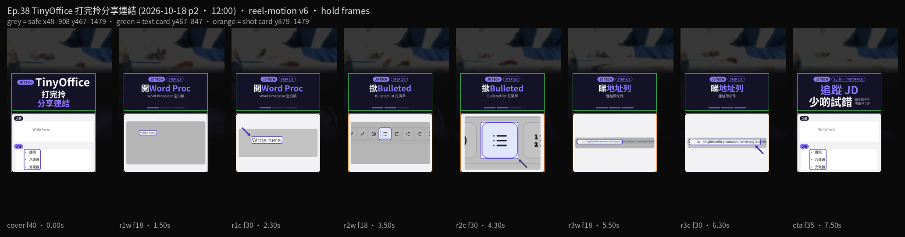

急整週末清單，唔想登雲。第38集用 Tiny Little Office（tinylittleoffice.com，Paul Ford）：開 Word Processor 空白稿，撳 Bulleted list 打清單，睇地址列。連結即文件。免帳戶。示範係週末澳門兩日：護照、八達通、充電器、酒店確認。清單虛構，無真實同行人名同電話。
Reel 一句講晒：TinyOffice｜打完拎／分享連結
你會學到
- 點樣開 Word Processor，見到空白稿
- 點樣撳 Bulleted list 打清單
- 點樣睇地址列，條連結就係份文件
開始前準備
- 瀏覽器開 tinylittleoffice.com。示範冇註冊、冇裝 App
- 幾項要帶嘅嘢。下面有示範清單，可以照抄。真實人名同電話唔好打入去
- 知道地址列條 hash 即文件。傳條連結，對方開到同一份稿

可抄清單
示範清單（虛構，無真實同行人名／電話）
週末澳門兩日：護照、八達通、充電器、酒店確認。
3 步做法
-
開 Word Proc：開 tinylittleoffice.com，開 Word Processor，見到空白稿。空框原文係「Write here.」。免帳戶。本集第一步跟畫面名 Word Processor，唔好開錯其他工具。
-
撳 Bulleted：撳 Bulleted list，打清單。可以貼上面嗰幾項：護照、八達通、充電器、酒店確認。示範清單虛構。有真實同行人名或者電話，打之前先刪走。
-
睇地址列：睇瀏覽器地址列。條 hash 就係文件，連結即文件。整好可以將呢條連結傳俾同行。畫面亦有 Share… 同 Copy link；2026-10-17 示範未留開 Share 對話，本集跟地址列。
常見錯誤／注意事項
- 以為一定要登入：2026-10-17 打開，免帳戶。URL 就係文件。
- 只搵 Share 掣：本集睇地址列。地址列 hash 即文件。Share… 同 Copy link 係畫面入面嘅掣名，示範未開 Share 對話。
- 寫真實同行資料：示範清單虛構。真實人名、電話、酒店訂單號唔好打入去。條連結開到就係份稿。
- 搵唔到 Bulleted list：2026-10-17 清單掣叫 Bulleted list。
- 開錯工具：第一步開 Word Processor。空白稿原文係「Write here.」。
示範清單虛構。整好可以將地址列條連結傳俾同行。呢頁唔係叫你轉發呢則片。
香港用戶留意
用瀏覽器開 tinylittleoffice.com 就得，免帳戶。要認嘅字：Word Processor、Bulleted list。地址列條連結即文件。完整名係 Tiny Little Office。呢頁教你拎條連結傳出去，唔係叫你轉發呢則片。
官方說明
- Tiny Little Office（tinylittleoffice.com）
2026-10-17 自錄：開 Word Processor 見「Write here.」，清單掣叫 Bulleted list，地址列 hash 即文件。免帳戶。Paul Ford 作品。介面以你當日畫面為準
（tinylittleoffice.com 當日打開。介面可能更新，以官方為準）
原帖
睇原 Reel ↗（2026-10-18 發佈）